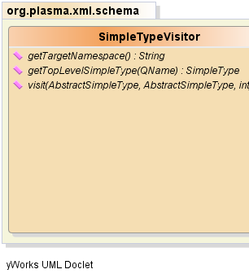
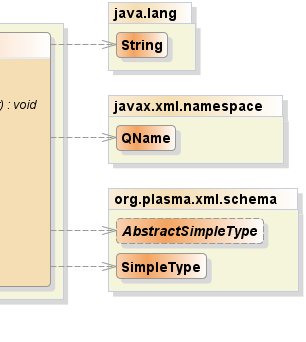

public interface SimpleTypeVisitor
Restriction,
List,
Union|  |  |
| Modifier and Type | Method and Description |
|---|---|
java.lang.String |
getTargetNamespace()
Returns the target namespace for a particular
schema instance.
|
SimpleType |
getTopLevelSimpleType(javax.xml.namespace.QName name)
Since the the type hierarchy traversal will encounter
qualified name references to many simple types, the
traversal logic requests a simple type from the visitor client.
|
void |
visit(AbstractSimpleType target,
AbstractSimpleType source,
int level)
The top event received when a simple type is encountered
in the course of traversal.
|
void visit(AbstractSimpleType target, AbstractSimpleType source, int level)
target - the target or "child" typesource - the source or "parent" typelevel - the traversal levelSimpleType getTopLevelSimpleType(javax.xml.namespace.QName name)
name - the qualified name of the simple typejava.lang.String getTargetNamespace()
PlasmaSDO™ and PlasmaQuery™ are trademarks of TerraMeta Software, Inc. Copyright © 2011 - All Rights Reserved.